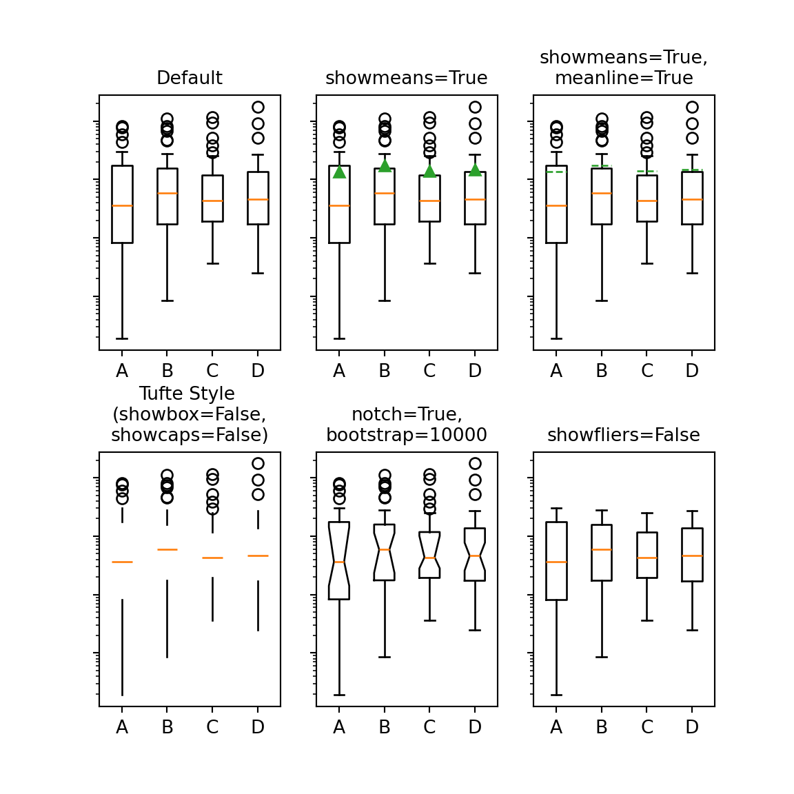

install.packages("tidyverse")7 Coding
For a lot of the above we need to know how to code. In order to write code we need minimally to answer two questions. What language? What tooling?
7.0.1 Languages
What should I consider when selecting a programming language? Will it do what I need it to do now and tomorrow.
- Is SPSS a good language for statistics?
- Is R a good language for statistics?
- Is Python a good language for statistics?
- Is R a good language for coding a web app?
- Is R a good language for coding an in-lab visual experiment?
- Should you use Julia? Common Lisp? Haskell? Lean? OCaml? Rust? Go?
How do you future proof? - If languages go in and out of fashion what is it you should really be learning about programming? What are good coding practices?
7.0.2 IDEs
- Who are you writing code for? Human or Machine?
- What is an IDE? What makes for a good IDE?
7.0.2.1 Using an IDE
For this course we will default to VSCode, because it is currently very popular and becoming somewhat of a standard. Everything said above about not getting to attached to the flavor of the month applies to IDEs. Especially since VSCode is a tool tied to Microsoft. However, there is an opensource build of VSCode that you can use instead. You can also use any other tool you want to as long as you can figure out how to make it do the things I will ask you to do. I, for one, live in Emacs.
7.0.2.2 VSCode
Exercise Install VSCode
7.0.2.3 Jupyter Notebooks
What are jupyter notebooks? Are jupyter notebooks ide’s? What are their purpose? What languages to they support? MORE TO ADD
7.0.2.4 Beginning with Jupyter and Quarto/VS
Good instructions are on the Quarto website. Note those terminal commands.
You could at this point use the brower interface for editing your ipynb file with {sh} python3 -m jupyter lab or you could open a file in VS Code.
Make sure you have the jupyter extension for vscode. Then you will want to create or open a new jupyter file and select the appropriate kernel (initially use python). If you are in the correct directory and had previously created a virtual environment then all should be good to go. And you can in the terminal invoke the quarto command to see your document with quarto preview my-demo-notebook.ipynb.
7.0.3 Languages
7.0.3.1 R
7.0.3.1.1 Installation
- OSX
- Windows
- Linux
Follow the appropriate instructions for your operating system.
Test your installation by opening a TERMINAL and typing the capital letter R. You should end up in an interpreter. You can quit with quit().
Restart R in a TERMINAL and install a package. A package is a collection of code, often much of it written in R, that is used for doing things in R. For example try:
The tidyverse is a very popular collection of R code that itself will depend on many additional pieces of R code and other packages, some R and some not.
If that went well, you need to make sure you restart VS Code and then click on the little set of squares at the left to install the R extension for VS Code.
If all goes well check out the book on using R that is itself written in Quarto, by the programmer who authored the tidyverse. And make sure you can create a file in VSCode as a quarto document, cut and paste in some R code, and see the whole thing compile to a web page. This after all will be a homework.
if(!require(tidyverse)){
install.packages("tidyverse")
}
if(!require(palmerpenguins)){
install.packages("palmerpenguins")
}
library(tidyverse)
library(palmerpenguins)
ggplot(
data = penguins,
mapping = aes(x = flipper_length_mm, y = body_mass_g, color = species)
) +
geom_point() +
geom_smooth(method = "lm")
7.0.3.2 Python
Note
If the following doesn’t go smoothly for you check out the additional suggestions in the python-venv appendix.
7.0.3.2.1 Installation
Install the mathplotlib and numpy packages.
Class Discussion
What is a “package” when talking about programming languages? What is a “library”? What is an “executable”?
Warning
Ask me about virtual environments!
7.0.3.2.2 Testing
Warning
You may need to install the “reticulate” package for R if you want to run both python and R code in the same document as I am trying to do here.

7.0.3.3 Javascript
7.0.3.3.1 Installation
Since javascript is already included in most browsers you likely have a basic version of javascript installed, and you can get started with almost no additional tools. As a quick illustration open up your favorite browser and look in the settings or options for something like “more Tools”. Somewhere in that menu should be a web tools or web developer tools entry. Click it, and you should see something that looks like your VS Code screen with terminal like objects at the bottom. One of those is the console. Select it. Then you can create a function and use it with something like:
function add(a,b=10){return a + b}A simple javascript function.
7.0.3.3.2 A Better Way to Go
Even though there is a convenience factor in using your browser’s console it is a very limited way to code. It is fine for testing out a line or two of javascript, but to actually code something you will want an actual development environment, and we will use VS Code.
To code javascript outside the browser you need a proper environment such as Node.js. There are many ways to install this, but if you are new to javascript using the official installer is probably best. To check if the installation went well you can run node -v inside a terminal. You should see a version number. If you are sure you downloaded things correctly you may have to set your path so your terminal can find the installation.
To test your installation you can create a test folder, e.g. call it “hello” and open that folder in VS Code. Then create a new file “app.js”. VS Code should give you a lot of help out of the box as you enter:
var msg = 'Hello World';
console.log(msg);After saving you should be able to move down into your terminal and run node app.js to then see “Hello World” printed.1
This example comes from this node tutorial.↩︎